Chapter 3 A Primer in Regression Techniques
All models are wrong, but some are useful – Box
3.1 Introduction
This chapter will provide all the foundations we need for the coming chapters. It is not intended as a general and all-exhaustive introduction to regression techniques, but rather the minimum requirement moving forwards. We will also hone our data processing and plotting skills.
3.2 Prerequisites
library(mefa4) # data manipulation
library(mgcv) # GAMs
library(pscl) # zero-inflated models
library(lme4) # GLMMs
library(MASS) # Negative Binomial GLM
library(partykit) # regression trees
library(intrval) # interval magic
library(opticut) # optimal partitioning
library(visreg) # regression visualization
library(MuMIn) # multi-model inference
source("functions.R") # some useful stuff
load("./_data/josm/josm.rda") # JOSM data3.3 Poisson null model
spp <- "OVEN" # which species
ytot <- Xtab(~ SiteID + SpeciesID , josm$counts[josm$counts$DetectType1 != "V",])
ytot <- ytot[,colSums(ytot > 0) > 0]
x <- data.frame(
josm$surveys,
y=as.numeric(ytot[rownames(x), spp]))
table(x$y)##
## 0 1 2 3 4 5 6
## 2493 883 656 363 132 29 13\(E[Y_i] = \lambda_i = \lambda\), \((Y_i \mid \lambda) \sim Poisson(\lambda)\), \(log(\lambda) = \beta_0\), \(\lambda = e^{\beta_0}\)
Null model
mP0 <- glm(y ~ 1, data=x, family=poisson)
mean(x$y)## [1] 0.8831mean(fitted(mP0))## [1] 0.8831exp(coef(mP0))## (Intercept)
## 0.8831summary(mP0)##
## Call:
## glm(formula = y ~ 1, family = poisson, data = x)
##
## Deviance Residuals:
## Min 1Q Median 3Q Max
## -1.33 -1.33 -1.33 1.02 3.57
##
## Coefficients:
## Estimate Std. Error z value Pr(>|z|)
## (Intercept) -0.1243 0.0157 -7.89 0.0000000000000029 ***
## ---
## Signif. codes: 0 '***' 0.001 '**' 0.01 '*' 0.05 '.' 0.1 ' ' 1
##
## (Dispersion parameter for poisson family taken to be 1)
##
## Null deviance: 7424.8 on 4568 degrees of freedom
## Residual deviance: 7424.8 on 4568 degrees of freedom
## AIC: 12573
##
## Number of Fisher Scoring iterations: 63.4 Exploring covariates
What is a useful covariate?
mCT <- ctree(y ~ Open + Water + Agr + UrbInd + SoftLin + Roads +
Decid + OpenWet + Conif + ConifWet, data=x)
plot(mCT, cex=0.5)
3.5 Poisson GLM with one covariate
mP1 <- glm(y ~ Decid, data=x, family=poisson)
mean(x$y)## [1] 0.8831mean(fitted(mP0))## [1] 0.8831summary(mP1)##
## Call:
## glm(formula = y ~ Decid, family = poisson, data = x)
##
## Deviance Residuals:
## Min 1Q Median 3Q Max
## -2.291 -0.977 -0.790 0.469 4.197
##
## Coefficients:
## Estimate Std. Error z value Pr(>|z|)
## (Intercept) -1.1643 0.0352 -33.1 <0.0000000000000002 ***
## Decid 2.1338 0.0537 39.7 <0.0000000000000002 ***
## ---
## Signif. codes: 0 '***' 0.001 '**' 0.01 '*' 0.05 '.' 0.1 ' ' 1
##
## (Dispersion parameter for poisson family taken to be 1)
##
## Null deviance: 7424.8 on 4568 degrees of freedom
## Residual deviance: 5736.9 on 4567 degrees of freedom
## AIC: 10887
##
## Number of Fisher Scoring iterations: 6AIC(mP0, mP1)## df AIC
## mP0 1 12573
## mP1 2 10887round(rbind(mP0=R2dev(mP0), mP1=R2dev(mP1)), 4)## R2 R2adj Deviance Dev0 DevR df0 dfR p_value
## mP0 0.0000 0.0000 0 7425 7425 4568 4568 0
## mP1 0.2273 0.2272 1688 7425 5737 4568 4567 0xnew <- data.frame(Decid=seq(0, 1, 0.01))
CI0 <- predict_sim(mP0, xnew, interval="confidence", level=0.95, B=999)
PI0 <- predict_sim(mP0, xnew, interval="prediction", level=0.95, B=999)
CI1 <- predict_sim(mP1, xnew, interval="confidence", level=0.95, B=999)
PI1 <- predict_sim(mP1, xnew, interval="prediction", level=0.95, B=999)
## nominal coverage is 95%
sum(x$y %[]% predict_sim(mP0, interval="prediction", level=0.95, B=999)[,c("lwr", "upr")]) / nrow(x)## [1] 0.9619sum(x$y %[]% predict_sim(mP1, interval="prediction", level=0.95, B=999)[,c("lwr", "upr")]) / nrow(x)## [1] 0.97093.6 Additive model
mGAM <- mgcv::gam(y ~ s(Decid), x, family=poisson)
plot(mGAM)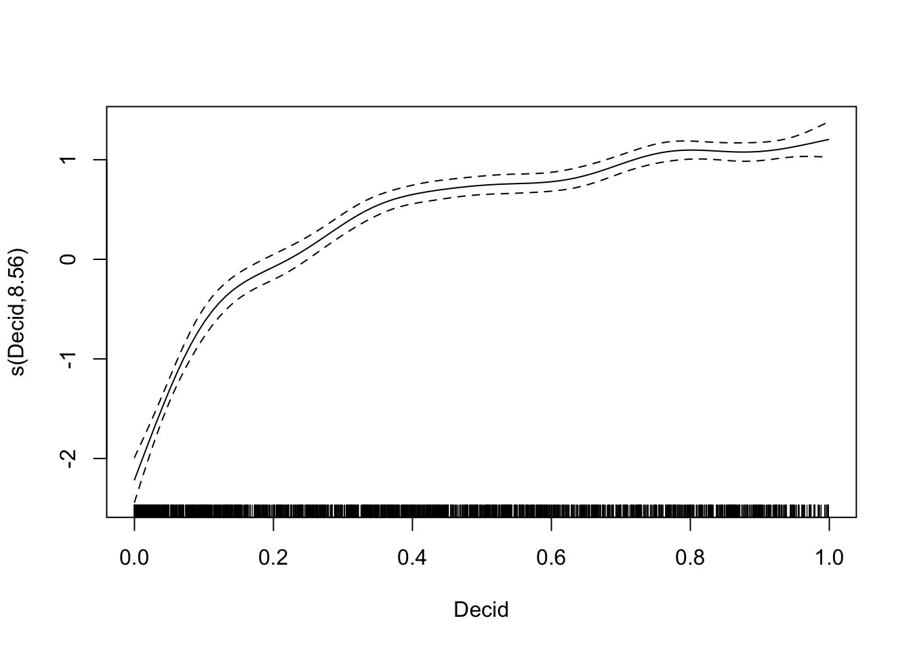
fitCT <- predict(mCT, x[order(x$Decid),])
fitGAM <- predict(mGAM, xnew, type="response")
op <- par(mfrow=c(2,2))
plot(jitter(y, 0.5) ~ Decid, x, xlab="Decid", ylab="E[Y]",
ylim=c(0, max(PI1$upr)+1), pch=19, col="#bbbbbb33", main="P0")
lines(CI0$fit ~ xnew$Decid, lty=1, col=4)
lines(CI0$lwr ~ xnew$Decid, lty=2, col=4)
lines(CI0$upr ~ xnew$Decid, lty=2, col=4)
lines(PI0$lwr ~ xnew$Decid, lty=3, col=4)
lines(PI0$upr ~ xnew$Decid, lty=3, col=4)
plot(jitter(y, 0.5) ~ Decid, x, xlab="Decid", ylab="E[Y]",
ylim=c(0, max(PI1$upr)+1), pch=19, col="#bbbbbb33", main="P1")
lines(CI1$fit ~ xnew$Decid, lty=1, col=4)
lines(CI1$lwr ~ xnew$Decid, lty=2, col=4)
lines(CI1$upr ~ xnew$Decid, lty=2, col=4)
lines(PI1$lwr ~ xnew$Decid, lty=3, col=4)
lines(PI1$upr ~ xnew$Decid, lty=3, col=4)
plot(jitter(y, 0.5) ~ Decid, x, xlab="Decid", ylab="E[Y]",
ylim=c(0, max(PI1$upr)+1), pch=19, col="#bbbbbb33", main="ctree")
lines(fitCT ~ x$Decid[order(x$Decid)], lty=1, col=4)
plot(jitter(y, 0.5) ~ Decid, x, xlab="Decid", ylab="E[Y]",
ylim=c(0, max(PI1$upr)+1), pch=19, col="#bbbbbb33", main="GAM")
lines(fitGAM ~ xnew$Decid, lty=1, col=4)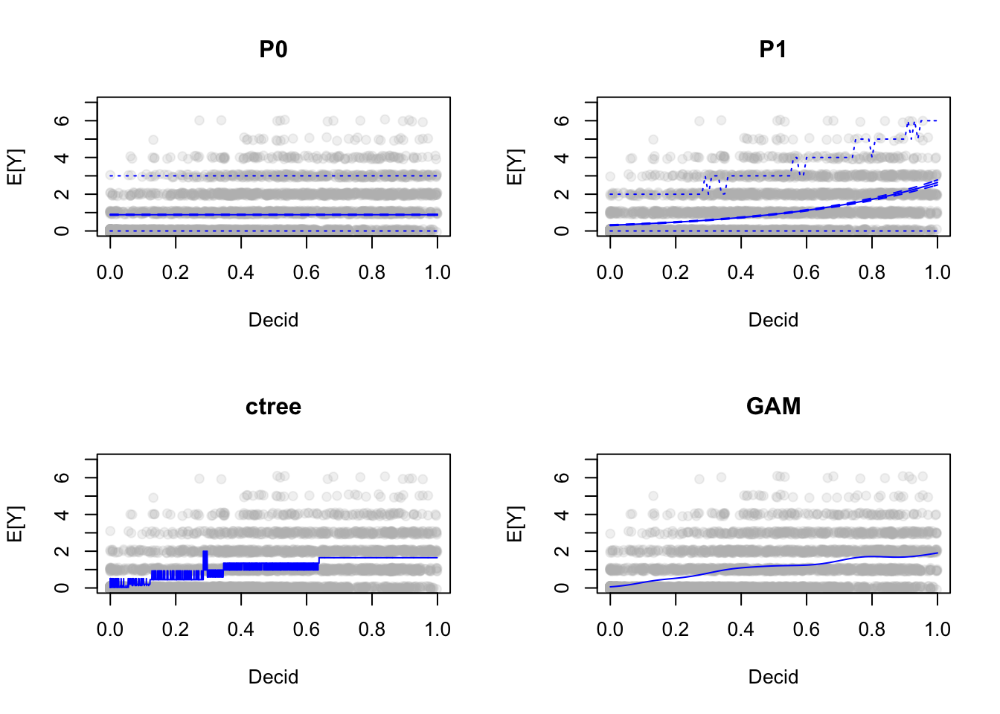
par(op)Exercise
Play with GAM and other variables to understand responses:plot(mgcv::gam(y ~ s(<variable_name>), data=x, family=poisson))
3.7 Multiple main effects
mP2 <- step(glm(y ~ Open + Agr + UrbInd + SoftLin + Roads +
Decid + OpenWet + Conif + ConifWet +
OvernightRain + TSSR + DAY + Longitude + Latitude,
data=x, family=poisson), trace=0)
summary(mP2)##
## Call:
## glm(formula = y ~ Open + UrbInd + Decid + OpenWet + Conif + ConifWet +
## TSSR + DAY + Longitude + Latitude, family = poisson, data = x)
##
## Deviance Residuals:
## Min 1Q Median 3Q Max
## -2.763 -0.986 -0.674 0.451 4.624
##
## Coefficients:
## Estimate Std. Error z value Pr(>|z|)
## (Intercept) -5.88293 1.30223 -4.52 0.0000062546826 ***
## Open -3.47428 0.65867 -5.27 0.0000001330000 ***
## UrbInd -1.66883 0.54216 -3.08 0.00208 **
## Decid 0.83372 0.25957 3.21 0.00132 **
## OpenWet -0.74076 0.30238 -2.45 0.01430 *
## Conif -0.88558 0.26566 -3.33 0.00086 ***
## ConifWet -1.89423 0.27170 -6.97 0.0000000000031 ***
## TSSR -1.23416 0.24984 -4.94 0.0000007818641 ***
## DAY -2.87970 0.52686 -5.47 0.0000000460898 ***
## Longitude 0.03831 0.00877 4.37 0.0000124210771 ***
## Latitude 0.20930 0.02309 9.06 < 0.0000000000000002 ***
## ---
## Signif. codes: 0 '***' 0.001 '**' 0.01 '*' 0.05 '.' 0.1 ' ' 1
##
## (Dispersion parameter for poisson family taken to be 1)
##
## Null deviance: 7424.8 on 4568 degrees of freedom
## Residual deviance: 5501.1 on 4558 degrees of freedom
## AIC: 10669
##
## Number of Fisher Scoring iterations: 6AIC(mP0, mP1, mP2)## df AIC
## mP0 1 12573
## mP1 2 10887
## mP2 11 10669round(rbind(mP0=R2dev(mP0), mP1=R2dev(mP1), mP2=R2dev(mP2)), 4)## R2 R2adj Deviance Dev0 DevR df0 dfR p_value
## mP0 0.0000 0.0000 0 7425 7425 4568 4568 0
## mP1 0.2273 0.2272 1688 7425 5737 4568 4567 0
## mP2 0.2591 0.2575 1924 7425 5501 4568 4558 03.8 Nonlinear terms
Polynomials
mP12 <- glm(y ~ Decid + I(Decid^2), data=x, family=poisson)
mP13 <- glm(y ~ Decid + I(Decid^2) + I(Decid^3), data=x, family=poisson)
mP14 <- glm(y ~ Decid + I(Decid^2) + I(Decid^3) + I(Decid^4), data=x, family=poisson)
AIC(mP1, mP12, mP13, mP14)## df AIC
## mP1 2 10887
## mP12 3 10544
## mP13 4 10461
## mP14 5 10441pr <- cbind(
predict(mP1, xnew, type="response"),
predict(mP12, xnew, type="response"),
predict(mP13, xnew, type="response"),
predict(mP14, xnew, type="response"),
fitGAM)
matplot(xnew$Decid, pr, lty=1, type="l")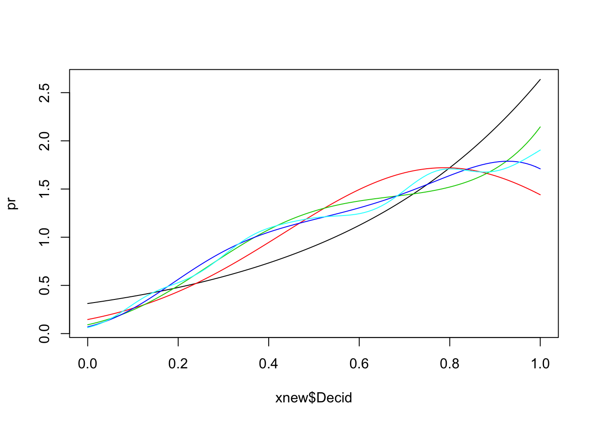
3.9 Categorical variables
Categories
cn <- c("Open", "Water", "Agr", "UrbInd", "SoftLin", "Roads", "Decid",
"OpenWet", "Conif", "ConifWet")
h <- find_max(x[,cn])
hist(h$value)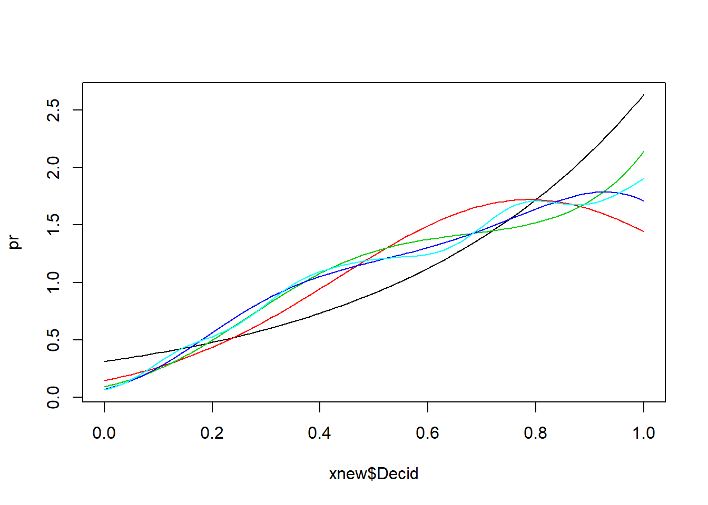
table(h$index)##
## Open Water Agr UrbInd SoftLin Roads Decid
## 12 10 4 14 0 2 2084
## OpenWet Conif ConifWet
## 160 745 1538x$hab <- droplevels(h$index)
mP3 <- glm(y ~ hab, data=x, family=poisson)
summary(mP3)##
## Call:
## glm(formula = y ~ hab, family = poisson, data = x)
##
## Deviance Residuals:
## Min 1Q Median 3Q Max
## -1.691 -0.873 -0.817 0.449 4.832
##
## Coefficients:
## Estimate Std. Error z value Pr(>|z|)
## (Intercept) -1.386 0.577 -2.40 0.0163 *
## habWater 1.030 0.690 1.49 0.1357
## habAgr 0.693 0.913 0.76 0.4477
## habUrbInd 0.134 0.764 0.17 0.8612
## habRoads -10.916 201.285 -0.05 0.9567
## habDecid 1.744 0.578 3.02 0.0025 **
## habOpenWet 0.422 0.591 0.71 0.4755
## habConif 0.913 0.579 1.58 0.1150
## habConifWet 0.288 0.579 0.50 0.6185
## ---
## Signif. codes: 0 '***' 0.001 '**' 0.01 '*' 0.05 '.' 0.1 ' ' 1
##
## (Dispersion parameter for poisson family taken to be 1)
##
## Null deviance: 7424.8 on 4568 degrees of freedom
## Residual deviance: 5997.2 on 4560 degrees of freedom
## AIC: 11161
##
## Number of Fisher Scoring iterations: 10AIC(mP0, mP1, mP2, mP3)## df AIC
## mP0 1 12573
## mP1 2 10887
## mP2 11 10669
## mP3 9 11161round(rbind(mP0=R2dev(mP0), mP1=R2dev(mP1), mP2=R2dev(mP2), mP3=R2dev(mP3)), 4)## R2 R2adj Deviance Dev0 DevR df0 dfR p_value
## mP0 0.0000 0.0000 0 7425 7425 4568 4568 0
## mP1 0.2273 0.2272 1688 7425 5737 4568 4567 0
## mP2 0.2591 0.2575 1924 7425 5501 4568 4558 0
## mP3 0.1923 0.1909 1428 7425 5997 4568 4560 03.9.1 Optimal partitioning
oc <- opticut(as.matrix(ytot) ~ 1, strata = x$hab, dist="poisson")
plot(oc)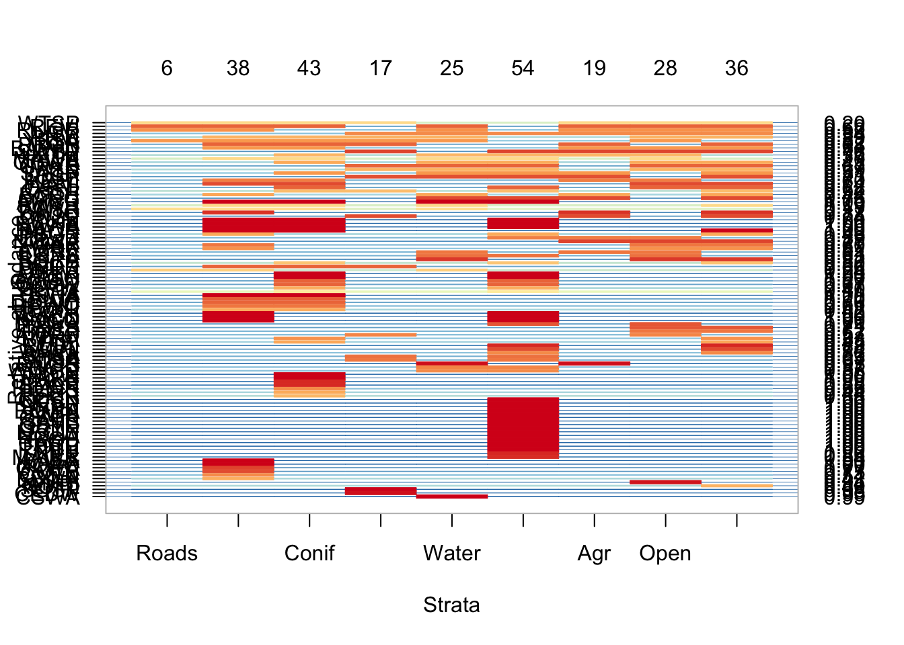
3.9.2 Finding optimal combinations of factor levels
Categorical and compositional data
# dominant hab
M <- model.matrix(~hab-1, x)
colnames(M) <- levels(x$hab)
ol1 <- optilevels(x$y, M, dist="poisson")
sort(exp(coef(bestmodel(ol1))))## `Open+UrbInd+Roads+OpenWet+ConifWet`
## 0.3366
## `Water+Agr+Conif`
## 0.6232
## Decid
## 1.4304## estimates
exp(ol1$coef)## Open Water Agr UrbInd Roads Decid OpenWet
## [1,] 0.2500 0.7000 0.5000 0.2857 0.00000454 1.43 0.3813
## [2,] 0.2692 0.7000 0.5000 0.2692 0.00000454 1.43 0.3813
## [3,] 0.2692 0.6238 0.5000 0.2692 0.00000454 1.43 0.3812
## [4,] 0.2692 0.6232 0.6232 0.2692 0.00000454 1.43 0.3813
## [5,] 0.3325 0.6232 0.6232 0.3325 0.00000454 1.43 0.3813
## [6,] 0.3370 0.6232 0.6232 0.3370 0.00000454 1.43 0.3370
## [7,] 0.3366 0.6232 0.6232 0.3366 0.33661645 1.43 0.3366
## [8,] NA NA NA NA NA NA NA
## [9,] NA NA NA NA NA NA NA
## Conif ConifWet
## [1,] 0.6228 0.3336
## [2,] 0.6228 0.3336
## [3,] 0.6238 0.3336
## [4,] 0.6232 0.3336
## [5,] 0.6232 0.3325
## [6,] 0.6232 0.3370
## [7,] 0.6232 0.3366
## [8,] NA NA
## [9,] NA NA## optimal classification
ol1$rank## Open Water Agr UrbInd Roads Decid OpenWet Conif ConifWet
## [1,] 2 8 6 3 1 9 5 7 4
## [2,] 2 7 5 2 1 8 4 6 3
## [3,] 2 6 5 2 1 7 4 6 3
## [4,] 2 5 5 2 1 6 4 5 3
## [5,] 2 4 4 2 1 5 3 4 2
## [6,] 2 3 3 2 1 4 2 3 2
## [7,] 1 2 2 1 1 3 1 2 1
## [8,] NA NA NA NA NA NA NA NA NA
## [9,] NA NA NA NA NA NA NA NA NAol1$levels[[length(ol1$levels)]]## Open
## "Open+UrbInd+Roads+OpenWet+ConifWet"
## Water
## "Water+Agr+Conif"
## Agr
## "Water+Agr+Conif"
## UrbInd
## "Open+UrbInd+Roads+OpenWet+ConifWet"
## Roads
## "Open+UrbInd+Roads+OpenWet+ConifWet"
## Decid
## "Decid"
## OpenWet
## "Open+UrbInd+Roads+OpenWet+ConifWet"
## Conif
## "Water+Agr+Conif"
## ConifWet
## "Open+UrbInd+Roads+OpenWet+ConifWet"# composition
ol2 <- optilevels(x$y, x[,cn], dist="poisson")
sort(exp(coef(bestmodel(ol2))))## Open
## 0.04936
## ConifWet
## 0.18363
## `Agr+UrbInd+SoftLin+OpenWet+Conif`
## 0.50444
## `Water+Roads`
## 1.15427
## Decid
## 2.49578## estimates
exp(ol2$coef)## Open Water Agr UrbInd SoftLin Roads Decid OpenWet
## [1,] 0.04790 1.174 0.5579 0.4313 0.5102 1.038 2.496 0.5627
## [2,] 0.04791 1.174 0.5625 0.4313 0.5104 1.038 2.496 0.5625
## [3,] 0.04795 1.174 0.5628 0.4324 0.4944 1.046 2.497 0.5628
## [4,] 0.04790 1.156 0.5628 0.4291 0.4940 1.156 2.494 0.5628
## [5,] 0.04782 1.146 0.5632 0.4917 0.4917 1.146 2.493 0.5632
## [6,] 0.04936 1.154 0.5044 0.5044 0.5044 1.154 2.496 0.5044
## [7,] NA NA NA NA NA NA NA NA
## [8,] NA NA NA NA NA NA NA NA
## [9,] NA NA NA NA NA NA NA NA
## [10,] NA NA NA NA NA NA NA NA
## Conif ConifWet
## [1,] 0.4941 0.1827
## [2,] 0.4941 0.1827
## [3,] 0.4944 0.1828
## [4,] 0.4940 0.1828
## [5,] 0.4917 0.1826
## [6,] 0.5044 0.1836
## [7,] NA NA
## [8,] NA NA
## [9,] NA NA
## [10,] NA NA## optimal classification
ol2$rank## Open Water Agr UrbInd SoftLin Roads Decid OpenWet Conif
## [1,] 1 9 6 3 5 8 10 7 4
## [2,] 1 8 6 3 5 7 9 6 4
## [3,] 1 7 5 3 4 6 8 5 4
## [4,] 1 6 5 3 4 6 7 5 4
## [5,] 1 5 4 3 3 5 6 4 3
## [6,] 1 4 3 3 3 4 5 3 3
## [7,] NA NA NA NA NA NA NA NA NA
## [8,] NA NA NA NA NA NA NA NA NA
## [9,] NA NA NA NA NA NA NA NA NA
## [10,] NA NA NA NA NA NA NA NA NA
## ConifWet
## [1,] 2
## [2,] 2
## [3,] 2
## [4,] 2
## [5,] 2
## [6,] 2
## [7,] NA
## [8,] NA
## [9,] NA
## [10,] NAhead(mefa4::groupSums(as.matrix(x[,cn]), 2, ol2$levels[[length(ol2$levels)]]))## Open Water+Roads Agr+UrbInd+SoftLin+OpenWet+Conif
## CL10102 0 0.073010 0.03326
## CL10106 0 0.008431 0.60166
## CL10108 0 0.008431 0.60166
## CL10109 0 0.036146 0.08157
## CL10111 0 0.050734 0.13353
## CL10112 0 0.050734 0.13353
## Decid ConifWet
## CL10102 0.85691 0.036819
## CL10106 0.04429 0.345625
## CL10108 0.04429 0.345625
## CL10109 0.88228 0.000000
## CL10111 0.81394 0.001797
## CL10112 0.81394 0.0017973.10 Interactions
mP4 <- glm(y ~ Decid + ConifWet, data=x, family=poisson)
mP5 <- glm(y ~ Decid * ConifWet, data=x, family=poisson)
AIC(mP0, mP1, mP4, mP5)## df AIC
## mP0 1 12573
## mP1 2 10887
## mP4 3 10791
## mP5 4 10549summary(mP5)##
## Call:
## glm(formula = y ~ Decid * ConifWet, family = poisson, data = x)
##
## Deviance Residuals:
## Min 1Q Median 3Q Max
## -2.081 -1.022 -0.484 0.374 4.321
##
## Coefficients:
## Estimate Std. Error z value Pr(>|z|)
## (Intercept) -0.5604 0.0566 -9.9 <0.0000000000000002
## Decid 1.2125 0.0782 15.5 <0.0000000000000002
## ConifWet -2.3124 0.1490 -15.5 <0.0000000000000002
## Decid:ConifWet 5.3461 0.3566 15.0 <0.0000000000000002
##
## (Intercept) ***
## Decid ***
## ConifWet ***
## Decid:ConifWet ***
## ---
## Signif. codes: 0 '***' 0.001 '**' 0.01 '*' 0.05 '.' 0.1 ' ' 1
##
## (Dispersion parameter for poisson family taken to be 1)
##
## Null deviance: 7424.8 on 4568 degrees of freedom
## Residual deviance: 5395.2 on 4565 degrees of freedom
## AIC: 10549
##
## Number of Fisher Scoring iterations: 6visreg(mGAM, scale="response")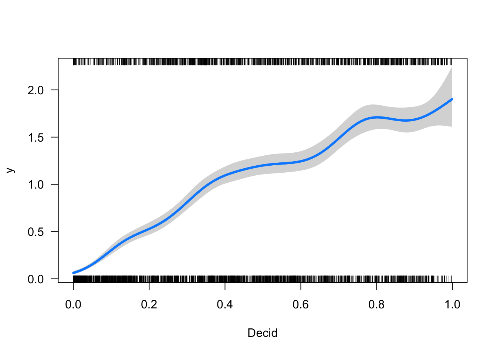
visreg(mP1, scale="response")
visreg(mP4, scale="response")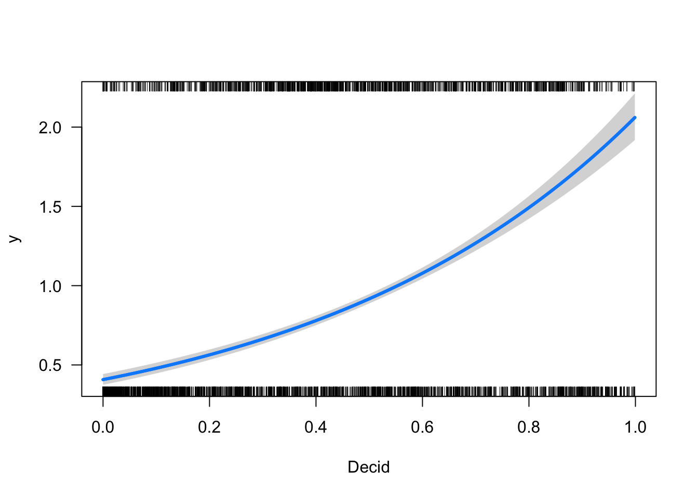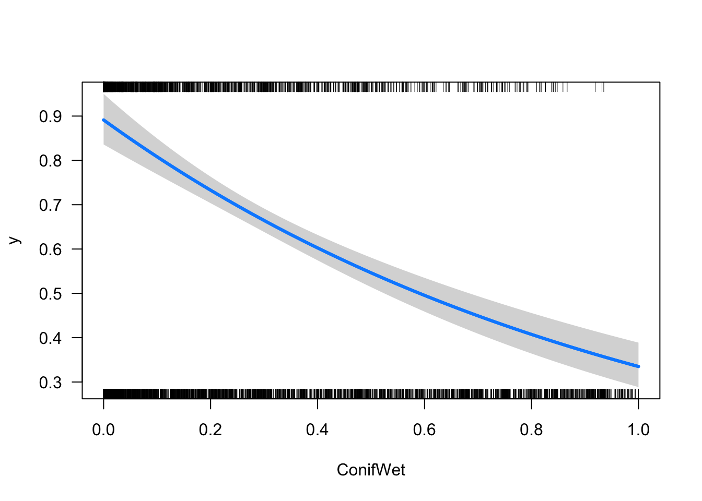
visreg(mP5, scale="response", xvar="Decid", by="ConifWet")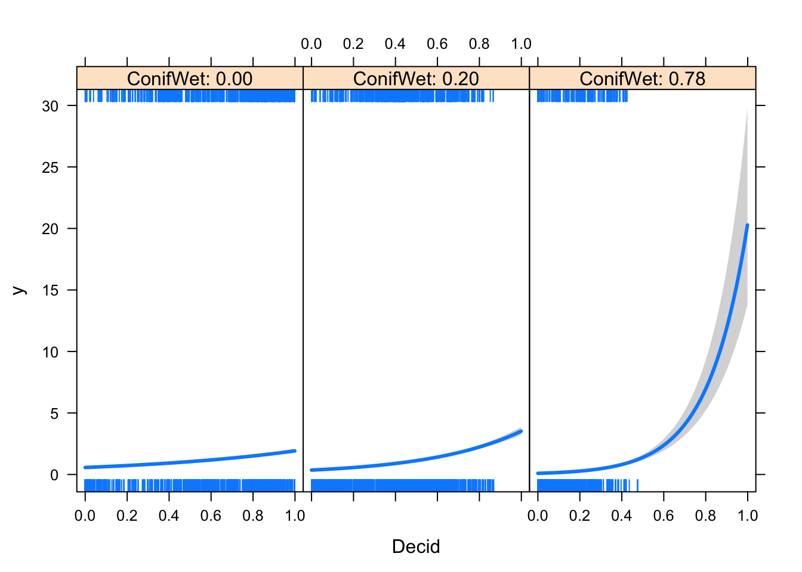
round(rbind(mP0=R2dev(mP0), mP1=R2dev(mP1), mP2=R2dev(mP2), mP3=R2dev(mP3),
mP4=R2dev(mP4), mP5=R2dev(mP5)), 4)## R2 R2adj Deviance Dev0 DevR df0 dfR p_value
## mP0 0.0000 0.0000 0 7425 7425 4568 4568 0
## mP1 0.2273 0.2272 1688 7425 5737 4568 4567 0
## mP2 0.2591 0.2575 1924 7425 5501 4568 4558 0
## mP3 0.1923 0.1909 1428 7425 5997 4568 4560 0
## mP4 0.2406 0.2403 1786 7425 5638 4568 4566 0
## mP5 0.2734 0.2729 2030 7425 5395 4568 4565 0model.sel(mP0, mP1, mP2, mP3, mP4, mP5)## Model selection table
## (Int) Dcd Cnf CnW DAY Ltt Lng Opn
## mP5 -0.5604 1.2130 -2.3120
## mP2 -5.8830 0.8337 -0.8856 -1.8940 -2.88 0.2093 0.03831 -3.474
## mP4 -0.7014 1.6220 -0.9785
## mP1 -1.1640 2.1340
## mP3 -1.3860
## mP0 -0.1243
## OpW TSS UrI hab CnW:Dcd df logLik AICc delta
## mP5 5.346 4 -5271 10549 0.0
## mP2 -0.7408 -1.234 -1.669 11 -5324 10669 120.0
## mP4 3 -5392 10791 241.2
## mP1 2 -5442 10887 337.7
## mP3 + 9 -5572 11162 612.1
## mP0 1 -6285 12573 2023.6
## weight
## mP5 1
## mP2 0
## mP4 0
## mP1 0
## mP3 0
## mP0 0
## Models ranked by AICc(x)3.11 Different error distributions
mP <- mP5 # best Poisson
mNB <- glm.nb(y ~ Decid * ConifWet, data=x)
mZIP <- zeroinfl(y ~ Decid * ConifWet | 1, x, dist="poisson")
mZINB <- zeroinfl(y ~ Decid * ConifWet | 1, x, dist="negbin")
AIC(mP, mNB, mZIP, mZINB)## df AIC
## mP 4 10549
## mNB 5 10440
## mZIP 5 10422
## mZINB 6 10419summary(mZINB)##
## Call:
## zeroinfl(formula = y ~ Decid * ConifWet | 1, data = x, dist = "negbin")
##
## Pearson residuals:
## Min 1Q Median 3Q Max
## -1.190 -0.689 -0.338 0.361 8.956
##
## Count model coefficients (negbin with log link):
## Estimate Std. Error z value Pr(>|z|)
## (Intercept) -0.3873 0.0732 -5.29 0.00000012
## Decid 1.1195 0.0911 12.29 < 0.0000000000000002
## ConifWet -2.4230 0.1589 -15.25 < 0.0000000000000002
## Decid:ConifWet 5.9227 0.3963 14.94 < 0.0000000000000002
## Log(theta) 2.6504 0.5305 5.00 0.00000059
##
## (Intercept) ***
## Decid ***
## ConifWet ***
## Decid:ConifWet ***
## Log(theta) ***
##
## Zero-inflation model coefficients (binomial with logit link):
## Estimate Std. Error z value Pr(>|z|)
## (Intercept) -1.861 0.193 -9.64 <0.0000000000000002 ***
## ---
## Signif. codes: 0 '***' 0.001 '**' 0.01 '*' 0.05 '.' 0.1 ' ' 1
##
## Theta = 14.159
## Number of iterations in BFGS optimization: 22
## Log-likelihood: -5.2e+03 on 6 Dfplogis(coef(mZINB, "zero")) # P of 0## (Intercept)
## 0.1346mZINB$theta # V(mu) = mu + mu^2/theta, ~inverse of variance## [1] 14.16# Variance function, 1:1 is Poisson
mu <- seq(0, 5, 0.01)
theta <- mZINB$theta
plot(mu, mu + mu^2/mZINB$theta, type="l", col=2)
lines(mu, mu + mu^2/mNB$theta, type="l", col=4)
abline(0,1)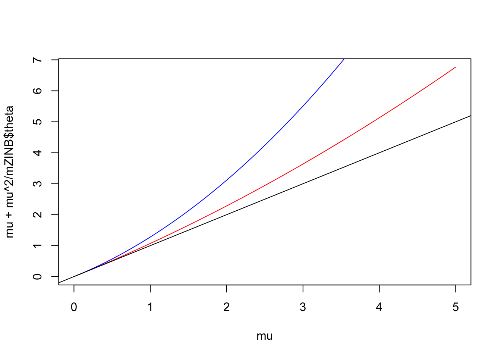
Poisson-Lognormal random effects, iid. and clustered:
mPLN1 <- glmer(y ~ Decid * ConifWet + (1 | SiteID), data=x, family=poisson)
mPLN2 <- glmer(y ~ Decid * ConifWet + (1 | SurveyArea), data=x, family=poisson)
AIC(mP, mNB, mZIP, mZINB, mPLN1, mPLN2)## df AIC
## mP 4 10549
## mNB 5 10440
## mZIP 5 10422
## mZINB 6 10419
## mPLN1 5 10423
## mPLN2 5 10021summary(mPLN2)## Generalized linear mixed model fit by maximum likelihood
## (Laplace Approximation) [glmerMod]
## Family: poisson ( log )
## Formula: y ~ Decid * ConifWet + (1 | SurveyArea)
## Data: x
##
## AIC BIC logLik deviance df.resid
## 10021 10053 -5006 10011 4564
##
## Scaled residuals:
## Min 1Q Median 3Q Max
## -1.739 -0.643 -0.320 0.355 6.535
##
## Random effects:
## Groups Name Variance Std.Dev.
## SurveyArea (Intercept) 0.295 0.543
## Number of obs: 4569, groups: SurveyArea, 271
##
## Fixed effects:
## Estimate Std. Error z value Pr(>|z|)
## (Intercept) -0.7459 0.0783 -9.53 <0.0000000000000002
## Decid 1.1967 0.0984 12.16 <0.0000000000000002
## ConifWet -2.3213 0.1686 -13.77 <0.0000000000000002
## Decid:ConifWet 5.5346 0.3977 13.92 <0.0000000000000002
##
## (Intercept) ***
## Decid ***
## ConifWet ***
## Decid:ConifWet ***
## ---
## Signif. codes: 0 '***' 0.001 '**' 0.01 '*' 0.05 '.' 0.1 ' ' 1
##
## Correlation of Fixed Effects:
## (Intr) Decid ConfWt
## Decid -0.808
## ConifWet -0.610 0.628
## Decid:CnfWt 0.162 -0.325 -0.6703.12 Counting time effects
spp <- "OVEN" # which species
ydur <- Xtab(~ SiteID + Dur + SpeciesID , josm$counts[josm$counts$DetectType1 != "V",])
y <- as.matrix(ydur[[spp]])
head(y)## 0-3min 3-5min 5-10min
## CL10102 3 0 0
## CL10106 0 0 0
## CL10108 0 0 0
## CL10109 2 0 1
## CL10111 2 0 0
## CL10112 2 0 0colMeans(y)## 0-3min 3-5min 5-10min
## 0.67367 0.09346 0.11600cumsum(colMeans(y))## 0-3min 3-5min 5-10min
## 0.6737 0.7671 0.8831x <- data.frame(
josm$surveys,
y3=y[,"0-3min"],
y5=y[,"0-3min"]+y[,"3-5min"],
y10=rowSums(y))
table(x$y3)##
## 0 1 2 3 4 5 6
## 2768 922 576 226 61 14 2table(x$y5)##
## 0 1 2 3 4 5 6
## 2643 894 632 285 87 24 4table(x$y10)##
## 0 1 2 3 4 5 6
## 2493 883 656 363 132 29 13m3 <- glm(y3 ~ Decid, data=x, family=poisson)
m5 <- glm(y5 ~ Decid, data=x, family=poisson)
m10 <- glm(y10 ~ Decid, data=x, family=poisson)
mean(fitted(m3))## [1] 0.6737mean(fitted(m5))## [1] 0.7671mean(fitted(m10))## [1] 0.8831set.seed(1)
x$meth <- sample(c("A", "B", "C"), nrow(x), replace=TRUE)
x$y <- x$y3
x$y[x$meth == "B"] <- x$y5[x$meth == "B"]
x$y[x$meth == "C"] <- x$y10[x$meth == "C"]
boxplot(y ~ meth, x)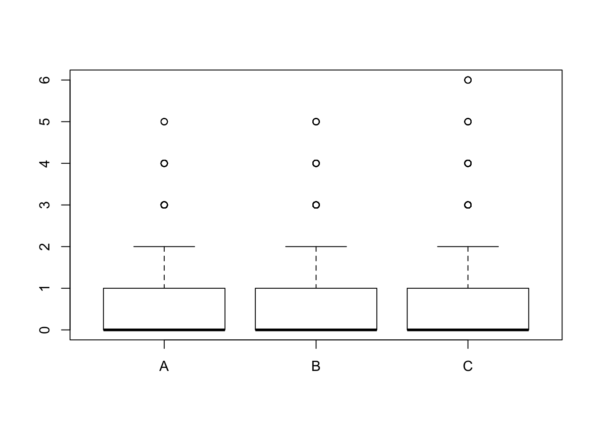
mm <- glm(y ~ meth - 1, data=x, family=poisson)
summary(mm)##
## Call:
## glm(formula = y ~ meth - 1, family = poisson, data = x)
##
## Deviance Residuals:
## Min 1Q Median 3Q Max
## -1.309 -1.263 -1.162 0.369 3.616
##
## Coefficients:
## Estimate Std. Error z value Pr(>|z|)
## methA -0.3929 0.0309 -12.70 < 0.0000000000000002 ***
## methB -0.2255 0.0289 -7.79 0.0000000000000066 ***
## methC -0.1550 0.0277 -5.60 0.0000000211399604 ***
## ---
## Signif. codes: 0 '***' 0.001 '**' 0.01 '*' 0.05 '.' 0.1 ' ' 1
##
## (Dispersion parameter for poisson family taken to be 1)
##
## Null deviance: 7225.2 on 4569 degrees of freedom
## Residual deviance: 6941.8 on 4566 degrees of freedom
## AIC: 11657
##
## Number of Fisher Scoring iterations: 6exp(coef(mm))## methA methB methC
## 0.6751 0.7981 0.8564mm <- glm(y ~ Decid + meth, data=x, family=poisson)
summary(mm)##
## Call:
## glm(formula = y ~ Decid + meth, family = poisson, data = x)
##
## Deviance Residuals:
## Min 1Q Median 3Q Max
## -2.278 -0.939 -0.736 0.457 4.201
##
## Coefficients:
## Estimate Std. Error z value Pr(>|z|)
## (Intercept) -1.4416 0.0457 -31.56 < 0.0000000000000002 ***
## Decid 2.1490 0.0574 37.43 < 0.0000000000000002 ***
## methB 0.1347 0.0424 3.18 0.0015 **
## methC 0.2705 0.0415 6.51 0.000000000073 ***
## ---
## Signif. codes: 0 '***' 0.001 '**' 0.01 '*' 0.05 '.' 0.1 ' ' 1
##
## (Dispersion parameter for poisson family taken to be 1)
##
## Null deviance: 6976.3 on 4568 degrees of freedom
## Residual deviance: 5442.7 on 4565 degrees of freedom
## AIC: 10159
##
## Number of Fisher Scoring iterations: 6boxplot(fitted(mm) ~ meth, x)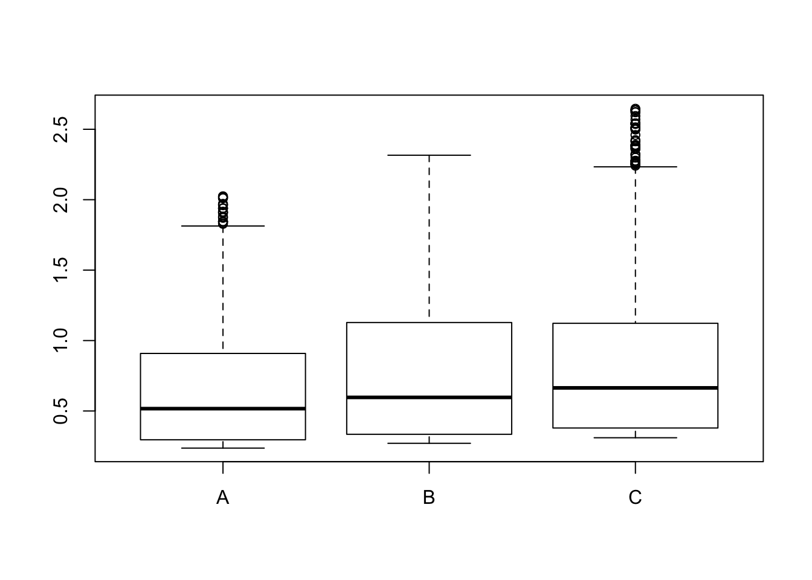
exp(coef(mm))## (Intercept) Decid methB methC
## 0.2365 8.5766 1.1442 1.3106cumsum(colMeans(y))## 0-3min 3-5min 5-10min
## 0.6737 0.7671 0.8831mean(y[,1]) * c(1, exp(coef(mm))[3:4])## methB methC
## 0.6737 0.7708 0.8829It is all relative, depends on reference methodology/protocol.
3.13 Counting radius effects
Use area subsets to demonstrate use of offsets
spp <- "OVEN" # which species
ydis <- Xtab(~ SiteID + Dis + SpeciesID , josm$counts[josm$counts$DetectType1 != "V",])
y <- as.matrix(ydis[[spp]])
head(y)## 0-50m 50-100m 100+m
## CL10102 1 2 0
## CL10106 0 0 0
## CL10108 0 0 0
## CL10109 1 2 0
## CL10111 1 0 1
## CL10112 0 2 0colMeans(y)## 0-50m 50-100m 100+m
## 0.29241 0.49223 0.09849cumsum(colMeans(y))## 0-50m 50-100m 100+m
## 0.2924 0.7846 0.8831x <- data.frame(
josm$surveys,
y50=y[,"0-50m"],
y100=y[,"0-50m"]+y[,"50-100m"])
table(x$y50)##
## 0 1 2 3 4 5
## 3521 792 228 25 2 1table(x$y100)##
## 0 1 2 3 4 5 6
## 2654 833 647 316 92 20 7m50 <- glm(y50 ~ Decid, data=x, family=poisson)
m100 <- glm(y100 ~ Decid, data=x, family=poisson)
mean(fitted(m50))## [1] 0.2924mean(fitted(m100))## [1] 0.7846coef(m50)## (Intercept) Decid
## -2.265 2.126coef(m100)## (Intercept) Decid
## -1.327 2.2093.14 Offsets
m50 <- glm(y50 ~ Decid, data=x, family=poisson,
offset=rep(log(0.5^2*pi), nrow(x)))
m100 <- glm(y100 ~ Decid, data=x, family=poisson,
offset=rep(log(1^2*pi), nrow(x)))
coef(m50)## (Intercept) Decid
## -2.024 2.126coef(m100)## (Intercept) Decid
## -2.471 2.209mean(exp(model.matrix(m50) %*% coef(m50)))## [1] 0.3723mean(exp(model.matrix(m100) %*% coef(m100)))## [1] 0.2498set.seed(1)
x$meth <- sample(c("A", "B"), nrow(x), replace=TRUE)
x$y <- x$y50
x$y[x$meth == "B"] <- x$y100[x$meth == "B"]
boxplot(y ~ meth, x)
mm <- glm(y ~ meth - 1, data=x, family=poisson)
summary(mm)##
## Call:
## glm(formula = y ~ meth - 1, family = poisson, data = x)
##
## Deviance Residuals:
## Min 1Q Median 3Q Max
## -1.256 -1.256 -0.775 0.228 3.731
##
## Coefficients:
## Estimate Std. Error z value Pr(>|z|)
## methA -1.2040 0.0375 -32.10 <0.0000000000000002 ***
## methB -0.2370 0.0240 -9.87 <0.0000000000000002 ***
## ---
## Signif. codes: 0 '***' 0.001 '**' 0.01 '*' 0.05 '.' 0.1 ' ' 1
##
## (Dispersion parameter for poisson family taken to be 1)
##
## Null deviance: 7299.4 on 4569 degrees of freedom
## Residual deviance: 5587.9 on 4567 degrees of freedom
## AIC: 9066
##
## Number of Fisher Scoring iterations: 6exp(coef(mm))## methA methB
## 0.300 0.789mm <- glm(y ~ Decid + meth, data=x, family=poisson)
summary(mm)##
## Call:
## glm(formula = y ~ Decid + meth, family = poisson, data = x)
##
## Deviance Residuals:
## Min 1Q Median 3Q Max
## -2.185 -0.847 -0.584 0.274 4.347
##
## Coefficients:
## Estimate Std. Error z value Pr(>|z|)
## (Intercept) -2.2719 0.0554 -41.0 <0.0000000000000002 ***
## Decid 2.1706 0.0690 31.4 <0.0000000000000002 ***
## methB 0.9804 0.0445 22.0 <0.0000000000000002 ***
## ---
## Signif. codes: 0 '***' 0.001 '**' 0.01 '*' 0.05 '.' 0.1 ' ' 1
##
## (Dispersion parameter for poisson family taken to be 1)
##
## Null deviance: 6110.2 on 4568 degrees of freedom
## Residual deviance: 4531.0 on 4566 degrees of freedom
## AIC: 8011
##
## Number of Fisher Scoring iterations: 6boxplot(fitted(mm) ~ meth, x)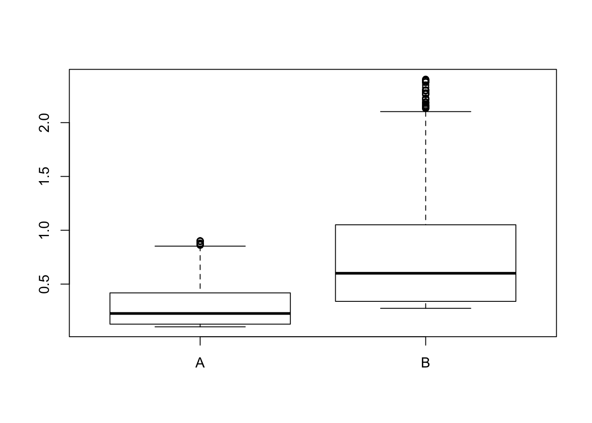
exp(coef(mm))## (Intercept) Decid methB
## 0.1031 8.7632 2.6654cumsum(colMeans(y))[1:2]## 0-50m 50-100m
## 0.2924 0.7846mean(y[,1]) * c(1, exp(coef(mm))[3])## methB
## 0.2924 0.7794mm <- glm(y ~ Decid, data=x, family=poisson,
offset=log(ifelse(x$meth == "A", 0.5, 1)^2*pi))
summary(mm)##
## Call:
## glm(formula = y ~ Decid, family = poisson, data = x, offset = log(ifelse(x$meth ==
## "A", 0.5, 1)^2 * pi))
##
## Deviance Residuals:
## Min 1Q Median 3Q Max
## -2.302 -0.836 -0.512 0.260 4.219
##
## Coefficients:
## Estimate Std. Error z value Pr(>|z|)
## (Intercept) -2.3374 0.0453 -51.6 <0.0000000000000002 ***
## Decid 2.1758 0.0690 31.5 <0.0000000000000002 ***
## ---
## Signif. codes: 0 '***' 0.001 '**' 0.01 '*' 0.05 '.' 0.1 ' ' 1
##
## (Dispersion parameter for poisson family taken to be 1)
##
## Null deviance: 5671.1 on 4568 degrees of freedom
## Residual deviance: 4609.2 on 4567 degrees of freedom
## AIC: 8087
##
## Number of Fisher Scoring iterations: 6boxplot(fitted(mm) ~ meth, x)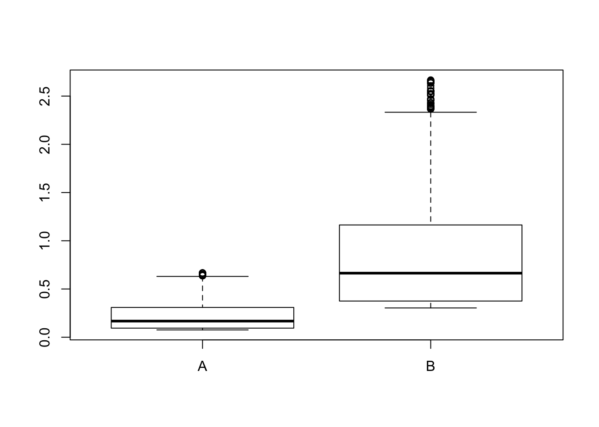
cumsum(colMeans(y))[1:2]## 0-50m 50-100m
## 0.2924 0.7846c(0.5, 1)^2*pi * mean(exp(model.matrix(mm) %*% coef(mm))) # /ha## [1] 0.2200 0.87983.15 Definitions
Discuss definitions of:
- relative abundance,
- abundance,
- occupancy,
- density.